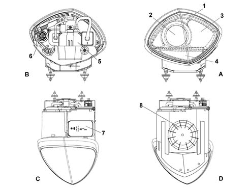
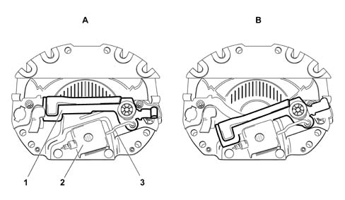
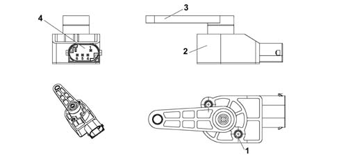
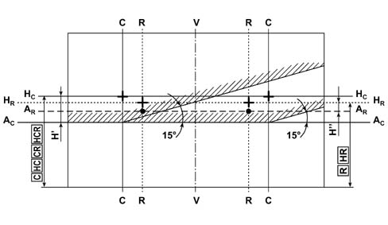
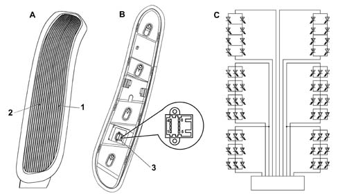

EXTERIOR LIGHTING
- Path
- Descriptions > 55 ELECTRICAL EQUIPMENT > 5540 EXTERIOR LIGHTING > EXTERIOR LIGHTING
- Kind
- system description
- Applies to
- all engines; all production periods
- Interactive page
- https://sloeber94.github.io/elrnDB-lThss/en/#/199272
Applies to: all engines; all production periods
DESCRIPTION
The vehicle exterior lighting system has been designed and produced with two objectives in mind:
- guaranteeing maximum efficiency with regard to the international regulations that define the lighting technology specifications for the various components
- being integrated with the design of the vehicle so that the various components enhance the image.
Front light clusters
The front light cluster houses the separate dipped headlamp, main beam headlamp, side light and direction indicator functions in a single element.
An electronic device allows the height adjustment of the light beam.

- A - Front view
- B - Rear view
- C - Upper view
- D - Lower view
- 1 - Side light
- 2 - Dipped/main beam headlamp
- 3 - Main beam headlamp
- 4 - Direction indicator
- 5 - Control unit for xenon lamp
- 6 - Connector
- Access cover for replacing bulbs for side lights, dipped/main beam headlamps and additional headlamp.
- Access cover for replacing direction indicator bulb.
Lamps with exhaust gas dipped/main beam headlamps with dynamic correction
Composition
This type of lamp known as a bi-xenon lamp uses a bulb containing xenon gas for both the dipped and main beam headlamps.
The features of this type of lamp are:
- increased light efficiency
- greater width and adjustment of the light beam
- less consumption at operating temperature
- longer bulb life
Each lamp is equipped with an electronic control unit for controlling the supply voltage. On account of their intense brightness, the adoption of xenon bulbs requires a dynamic alignment control system.
This system is governed by its own electronic control unit which operates on two levels:
- systematically realigning the direction according to the vehicle load
- dynamically maintaining the alignment to compensate for vehicle pitching
Operation
The light is projected onto the road by means of a large surface, spherical glass lens 70 millimetres in diameter. A partition ensures that the distribution of the light is different for the dipped headlamps and the main beam headlamps. In a raised position it produces the prescribed light - dark limit for the dipped headlamp. Lowered, on the other hand, it gives the main beam headlamp free rein. The partition is activated by a coil which, when supplied, operates a manget that raises or lowers it.
The mechanical operation of the lowering or raising movement takes place in real time.

- A - Dipped headlamps position
- B - Main beam headlamps position
- 1 - Moving partition
- 2 - Magnet
- 3 - Partition control rod
Light cluster
The light cluster has a powerful light beam that, in order to be used to best advantage, requires:
- a reflective surface (1) that collects the light beam
- a screen (2) that determines the shape of the light beam
- a spherical lens (3) that determines the depth of the light beam on the road
The xenon bulbs contain low pressure xenon gas and two electrodes.
To produce the emission of light there needs to be an electric arc between the two electrodes that has to be maintained.
Xenon bulb specifications: 35 W
Each lamp has a control unit which has the function of:
- controlling the voltage/current value to work at operating temperature
- striking the arc at the electrodes and evaporating the salts when switching on
The operation of xenon lamps can be divided into three stages:
- switching on, the control unit produces a high voltage (up to 20000V alternating current) capable of producing an arc (electric discharge) between the bulb electrodes.
- arc maintenance, the control unit supplies the bulb, for several seconds, with an excess current that produces the rapid evaporation of the metal halides contained in the bulb.
- Operating temperature, the control unit supplies the bulb with a constant voltage of 80F alternating current.
Headlamp dynamic automatic correction
On account of their intense brightness, the adoption of xenon bulbs requires an automatic dynamic alignment control system.
This system is controlled by an electronic control unit which operates the stepping actuators fitted on each dipped headlamp. The actutaors are controlled by processing the signals coming from the two alignment sensors.
The advantages of using an automatic dynamic headlamp alignment control system are:
- avoiding dazzling vehicles approaching in the other direction
- stabilizing the area lit to improve active safety
Headlamp alignment correction control unit
It is located under the floor, in the right front section.
For further information,(See subassembly ) 5505 INSTRUMENT/GAUGE ELECTRICAL CIRCUITS
Operation
The control unit compares the signals coming from the alignment sensors and calculates the vehicle geometry.
A "correction" signal is sent to the stepping acutators to adjust the light beam to the vehicle geometry.
To prevent oscillations of the dipped headlamp beam in case of:
- particular types of roads (cobblestones, unmade roads, etc.)
- sharp movements of the vehicle causes by the driver (clutch release, gear change, etc.)
the control unit reduces the number of corrections made to the light cluster.
The system manages the operation of the system if there is a fault in one of the components or a decrease in the supply voltage:
- Front sensor defective: the calculation of the geometry is made replacing the voltage value read at the sensor with a fixed memorized value.
- Rear sensor defective: the system moves to safety operating mode and keeps the lamps in a pre-set position. This position is the maximum permissible lowered position.
- Failed actuator connection: if there is no control signal, the actuators are placed in the maximum lowered position.
- Control unit faulty: depending on the type of fault, the sytem can remain in the position at the time of the fault or can be placed in the maximum permissible lowered position.
- Decrease in voltage: when the voltage goes below 9 Volts the system remains in the position at the time of the fault.
Direction sensors
They are the resistive type and one is fitted on the front suspension on the right hand side and the other is fitted on the rear suspension on the right hand side.
The sensors are supplied by the control unit (5V) and provide a digital signal output (PWM) which supplies the position of the suspension.
The connection between the sensor rotation axis and the rear suspension is produced by means of a "connecting rod - crank" system hinged on a self-lubricating ball joint.
The crank (1) is an integral part of the actuator and is fixed to the actual rotation axis.
The connecting rod (2) is fixed to the lower suspension track control arm (3) by means of a bracket (4).
The connection between the sensor rotation axis and the front suspension is the same as for the rear.

- 1 - sensor fixing openings
- 2 - sensor casing
- 3 - sensor arm
- 4 - connector
Connector pin out
Pin | Function |
|---|---|
1 | earth |
2 | not connected |
3 | not connected |
4 | analogue signal |
5 | +5V |
6 | PWM signal |
Stepping actuators
They are fitted directly on the headlamps and consist of:
- an electric stepping motor
- a screw-female screw reduction unit that transforms the rotary motion of a hinged push rod into linear motion by means of a ball joint.
An electronic control unit operates the motor coils according to the signals coming from the electronic control unit.
Headlamp alignment
Each light cluster, according to its function, is distinguished by one of the following markings on the glass:
V - V | vertical, corresponding to the trace of vehicle plane of symmetry; |
C - C | corresponding to the traces of the vertical planes passing through the reference centres of the light clusters CCR-HC-HCR; (on vehicles with a single light cluster C - C and R - R) |
R - R | corresponding to the traces of the vertical planes passing through the reference centres of the light clusters R-HR; (on vehicles with a single light cluster C - C and R - R) |
HC - HC | horizontal corresponding to the height from the ground of the reference centres of the light clusters C-CR-HC-HCR ( on some vehicles HC - HC and HR - HR coincide) |
HR - HR | horizontal corresponding to the height from the ground of the reference centres of the light clusters ( on some vehicles HC - HC and HR - HR coincide) |
AC - AC | horizontal below HC - HC and distant from the value shown in the table |
AR - AR | horizontal below HR - HR and distant from the value shown in the table in appendix 1 (column 4 for the first alignment and column 5 for the alignment with the vehicle bedded in). |
General rules for the alignment of vehicle headlamps in accordane with EEC directive 76/756
Position the vehicle in the "no load" condition with the tyres inflated to the heavy load pressure and with a person in the driver's seat (the mass of the person should be equal to 75 Kg, on a flat, horizontal surface with the reference centre of the headlamps 10 m from the screen). The vehicle should be complete with supplies (fuel, water, oil) and all accessories and tools (that come with the vehicle).
Screen
This should consist of an opaque surface on which the following lines have been traced:
V - V | vertical, corresponding to the trace of vehicle plane of symmetry; |
C - C | corresponding to the traces of the vertical planes passing through the reference centres of the light clusters CCR-HC-HCR; (on vehicles with a single light cluster C - C and R - R) |
R - R | corresponding to the traces of the vertical planes passing through the reference centres of the light clusters R-HR; (on vehicles with a single light cluster C - C and R - R) |
HC - HC | horizontal corresponding to the height from the ground of the reference centres of the light clusters C-CR-HC-HCR ( on some vehicles HC - HC and HR - HR coincide) |
HR - HR | horizontal corresponding to the height from the ground of the reference centres of the light clusters ( on some vehicles HC - HC and HR - HR coincide) |
AC - AC | horizontal below HC - HC and distant from the value shown in the table |
AR - AR | horizontal below HR - HR and distant from the value shown in the table in appendix 1 (column 4 for the first alignment and column 5 for the alignment with the vehicle bedded in). |
Light cluster alignment C-CR-HC-HCR
Carry out the alignment of these light clusters on the dipped headlamp light beam, adjusting the height from the ground of the demarcation line between the lit and dark areas and the position of the crossover point between the horizontal section and the inclined section of the demarcation line for both the left and right light clusters.
Proceed as follows:
- horizontal alignment: act on the alignment device for each light cluster so that the crossover point for the lines C - C and A < SUB > C < /SUB > - A < SUB > C < /SUB > coincides. A maximum movement of 175 mm (1°) on the screen, towards the outside of the vehicle is permissible.
- vertical alignment: act on the alignment device for each light cluster so that the horizontal section of the demarcation line with the line A < SUB > C < /SUB > - A < SUB > C < /SUB > traced on the screen coincides;
Light cluster alignment R - HR
Carry out the alignment for these light clusters for the light beam, adjusting the position of the maximum light brightness zone for both the left and right light clusters.
Act on the alignment device for each light cluster so that the centre of the maximum brightness zone coincides with the respective crossovers for the lines R - R and A R - A R. A maximum movements of 175 mm (1°) on the screen towards the outside of the vehicle is permitted.
Rapid alignment
To speed up the light cluster alignment operations optical devices that reproduce the characteristics that can be detected on a screen placed 10 m away can be used. The reference lines conforming to the figures for the different vehicles, acccording to the reproduction scales, must be traces on the screens.
The use of photometric devices is permitted as long as they are periodically checked with the vehicle lights directed at a screen 10 m away.

Fog light alignment
If the vehicle is equipped with fog lights, direct them onto a screen 10 m away so that the demarcation line is lower than the reference centre of the fog lights with the quantity equal to the value recommended for the light beam for the dipped headlamps of the vehicle in question, plus 1/2 of the height of the centre of the fog light from the ground.
In any case, with the above alignment, the fog light beam should still hit the screen; if the angle is such that the beam hits the ground before the screen, correct the alignment upwards so that the demarcation line strikes the ground at the point where the screen is located, i.e. 10 m from the front of the vehicle.
On a horizontal plan the beams should be aligned as recommended for the dipped healdmpas, with the exception of pre-adjusted headlamps.
Rear light cluster
These carry out the functions of:
- side lights/brake lights
- direction indicators
in two long, narrow vertical compartments.
There are no plans to replace the light sources for these types of lamps.

- A - Front view
- B - Rear view
- C - Wiring diagram
- 1 - Direction indicator
- 2 - Side light and brake light
- 3 - Connector
Connector pin out
Pin | Function |
|---|---|
1 | Brake lights |
2 | Direction indicators |
3 | Transmission |
4 | Reception |
5 | Battery + |
6 | Earth |
7 | Trailer signal |
8 | Side lights |
The uniform lighting of the entire compartment is possible thanks to the use of LEDs whose dimensions allow a flexible design and reduction in volume.
With the lamp switched off, the compartments are completely monochromatic: the colour of the functions is determined by the LEDs. The vertical chrome coloured lines of the aesthetic lens and the metallic edge of the outer cover give the lamp its "coloured" appearance.
The homogeneity and photometric qualities are achieved through two levels of high efficiency internal prism lenses.
The long average operating life of the LEDs (50,000 hours), longer than the average life of the vehicle, has made it possible to develop a lamp without the need of having to replace the light sources therefore it is maintenance-free from the point of view of the owner of the vehicle.
In addition the low LED consumption in this case means a saving of 60% in electricity compared with the use of standard bulbs.